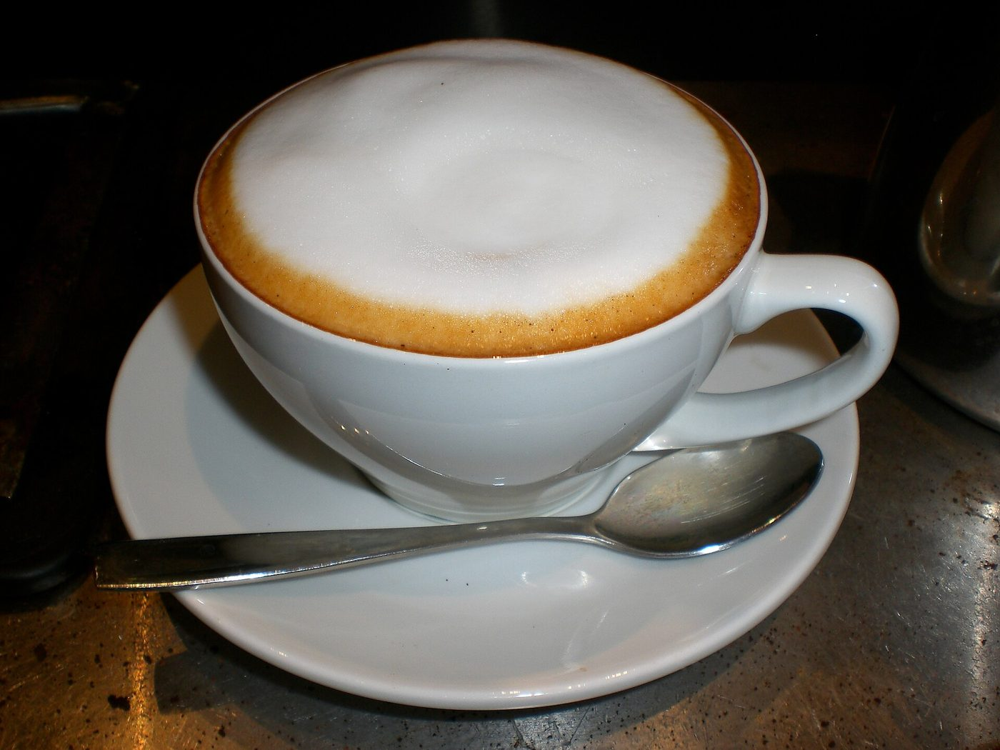
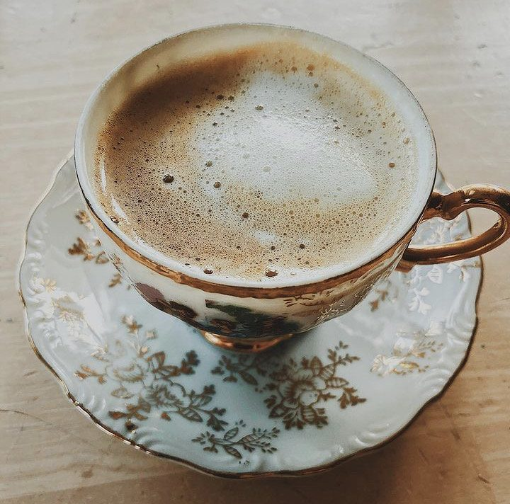

制作側の連想
シックナー(沈殿槽)の部位を、配置図にしてみる
このサイトは、濁った液を静かに澄ませる円形のタンク「シックナー」を断面の図にしたつもりで作りました。六つの部位に番号をふり、上の図と並べています。制作側の連想で、お店の理念・由来とは無関係です。実際の設備の仕様を示すものでもありません。
凡例
六つの部位
- 1供給口(フィードウェル)濁った液を静かに受け入れる、中央上部の円筒。
- 2沈降槽浅くて広い円形のタンク本体。粒が底へ沈むのを待つところ。
- 3レーキ底に沈んだものを中央へかき寄せる、ゆっくり回る腕。
- 4中央駆動軸レーキを回す、まん中の軸と上に載った駆動部。
- 5オーバーフロー樋澄んだ上澄みが縁からあふれて集まる溝。
- 6底部排出口濃くなった沈殿を抜き出す、円錐の先の口。
ギャラリー(イメージ)
パンとコーヒー豆の写真


写真はパンとコーヒー豆のイメージです。お店のものではなく、お店で提供している商品を示すものでもありません。
写真帯(イメージ)
カフェまわりの写真


写真はカフェまわりのイメージです。お店のものではありません。
ご案内
お店のこと(確認できたものだけ)
| 所在地 | 〒899-4202 鹿児島県霧島市霧島永水3373-9 |
|---|---|
| 電話 | 準備中 |
| 営業時間 | 準備中 |
| 定休日 | 準備中 |
| ご予約 | 準備中 |
| 駐車場 | 準備中 |
| SNS | Instagram @morinone.kirishima |